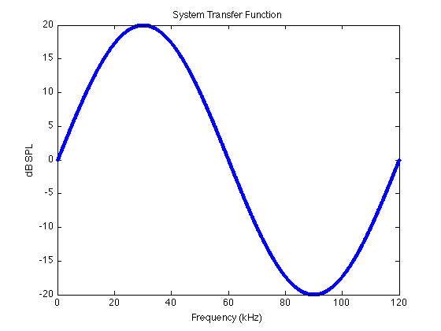
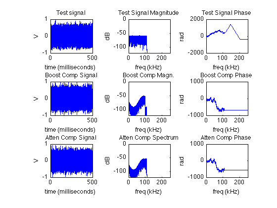
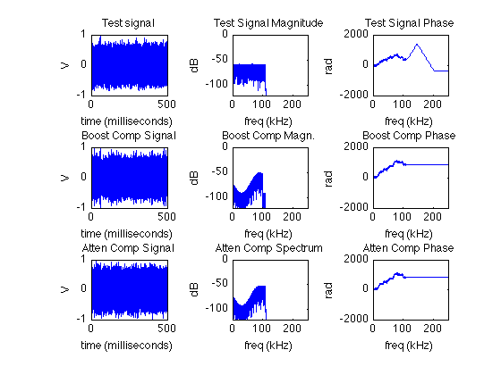

Contents
% frequencies
Fs = 500000;
Fmin = 100;
Fmax = 110000;
stimdur = 500;
corr_frange = [2000 100000];
MIN_DB = -120;
load dummy calibration data
caldata = fake_caldata('FREQS', 100:100:120000); % assign meaningful values to caldata.mag x = 2*pi*linspace(0, 1, length(caldata.mag(1, :))); m = 20 * sin(x); caldata.mag = [m; m]; % shorter names for freq and mag from caldata F = caldata.freq; M = caldata.mag(1, :); % plot figure(1) plot(0.001*F, M, '.-') xlabel('Frequency (kHz)') ylabel('dB SPL') title('System Transfer Function')
synthesize test noise from min(F) to max(F)
s = synmononoise_fft(stimdur, Fs, Fmin, Fmax, 1, 0); s = normalize(s); s = sin2array(s, 5, Fs); % s = synmonosine(stimdur, Fs, Fsine, 1, 0); % plot spectrum of s [fraw, magraw, phiraw] = daqdbfullfft(s, Fs, length(s)); figure(2) tvec = 1000 * (0:(length(s)-1)) ./ Fs; subplot(331) plot(tvec, s) title('Test signal') xlabel('time (milliseconds)') ylabel('V') subplot(332) plot(0.001*fraw, magraw); title('Test Signal Magnitude') xlabel('freq (kHz)') ylabel('dB') ylim([-120 0]) xlim([0 0.001*Fs/2]) subplot(333) plot(0.001*fraw, phiraw); title('Test Signal Phase'); xlabel('freq (kHz)'); ylabel('rad'); xlim([0 0.001*Fs/2]);
use compensate signal to compensate with BOOST
[sadj, Sfull, Hnorm, foutadj] = compensate_signal(s, F, M, Fs, corr_frange, 'Method', 'BOOST', 'Normalize', 'on', 'Lowcut', 'off'); % plot compensated signal [fadj, magadj, phiadj] = daqdbfullfft(sadj, Fs, length(sadj)); figure(2) subplot(334) plot(tvec, sadj) title('Boost Comp Signal') xlabel('time (milliseconds)') ylabel('V') subplot(335) plot(0.001*fadj, magadj); title('Boost Comp Magn.') xlabel('freq (kHz)') ylabel('dB') ylim([-120 0]) xlim([0 0.001*Fs/2]) subplot(336) plot(0.001*fadj, phiadj); title('Boost Comp Phase'); xlabel('freq (kHz)'); ylabel('rad'); xlim([0 0.001*Fs/2]);
test atten method
apply correction (ATTEN method)
[aadj, Afull, Hnorm, foutadj] = compensate_signal(s, F, M, Fs, corr_frange, 'Method', 'ATTEN', 'Normalize', 'on', 'Lowcut', 'off'); figure(2) % plot compensated signal [faadj, magaadj, phiaadj] = daqdbfullfft(aadj, Fs, length(aadj)); subplot(337) plot(tvec, aadj) title('Atten Comp Signal') xlabel('time (milliseconds)') ylabel('V') subplot(338) plot(0.001*faadj, magaadj); title('Atten Comp Spectrum') xlabel('freq (kHz)') ylabel('dB') ylim([-120 0]) xlim([0 0.001*Fs/2]) subplot(339) plot(0.001*faadj, phiaadj); title('Atten Comp Phase'); xlabel('freq (kHz)'); ylabel('rad'); xlim([0 0.001*Fs/2]);